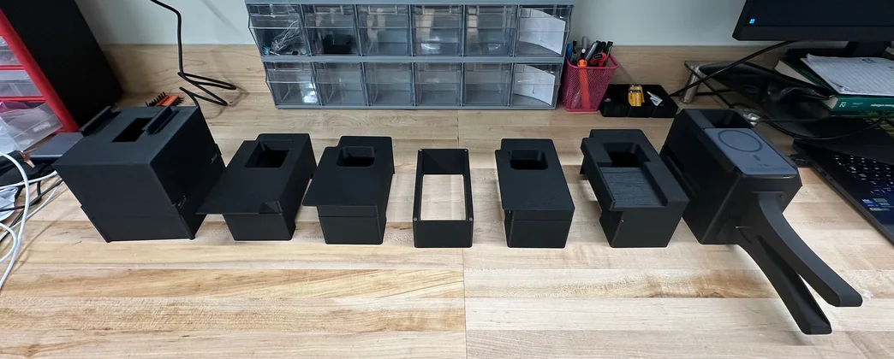
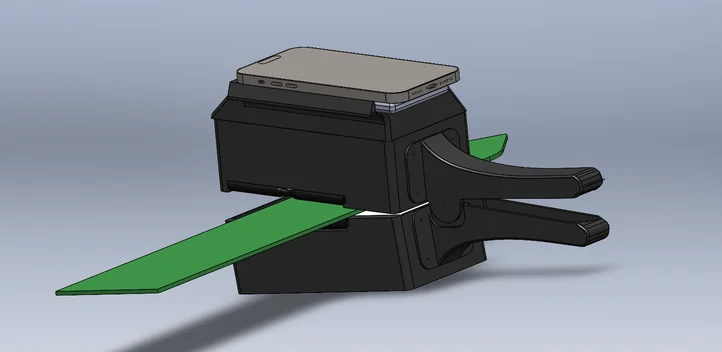
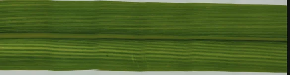
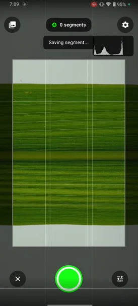
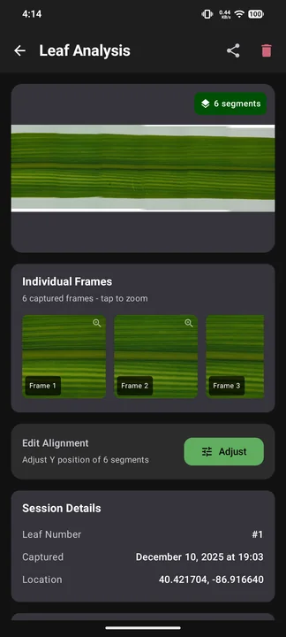
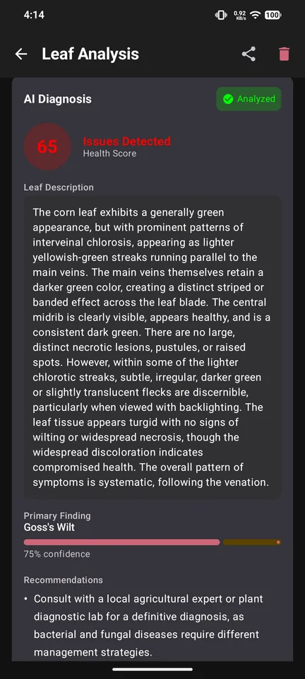

Project 01
LeafDoc
Smartphone plant imaging system with AI-powered diagnosis
A $50 handheld lightbox that clips onto a phone, blocks ambient light, and delivers uniform LED illumination — turning any smartphone into a repeatable leaf imaging rig.
The Problem
- Ambient light makes phone-captured leaf images inconsistent and hard to compare.
- Hand-holding a leaf introduces curl, shadow, and framing variation on every shot.
What I Built
- Contoured rollers flatten and center the leaf on entry — repeatable positioning, no manual adjustment.
- MagSafe mounting locks the phone in a fixed position above the sample.
- 7 enclosure revisions in SolidWorks, each printed to test light leak, roller clearance, and component fit.
- Native Android app in Kotlin and CameraX with manual camera control and an alignment stitching algorithm.
Outcome
- Overlapping frames assemble into a single full-length leaf image automatically.
- Cloud AI returns a health score, primary finding, and confidence level in-app — no export, no external tools.





